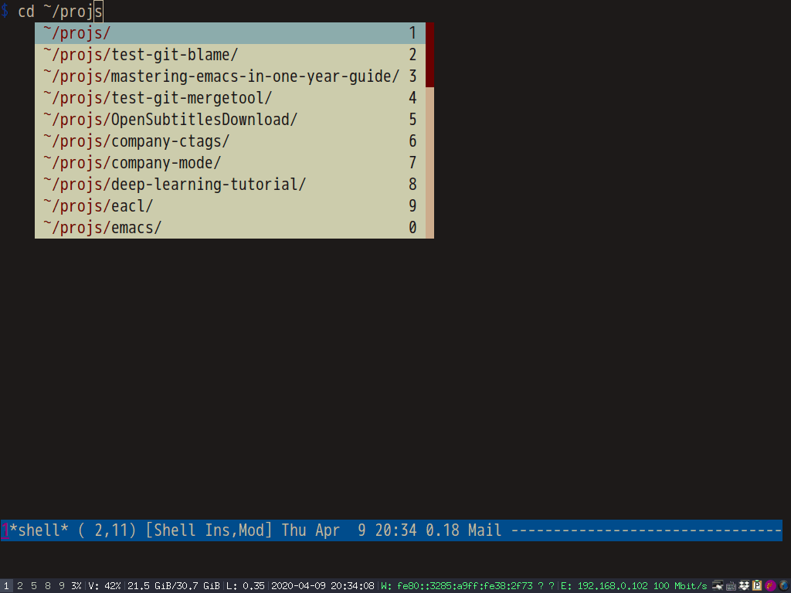
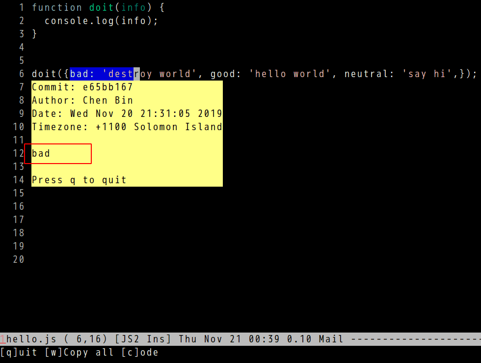

Use Magit API to rebase to closest branch
My workflow in Git is,
- Create a new feature branch based on main branch
- Add some small commits into feature branch
- Rebase feature branch interactively
The final rebase step happens a lot.
So I could use Magit api magit-rebase-interactive to speed up it.
The key is to analyze output of git log --decorate --oneline to find the main branch commit.
Code,
(defun my-git-extract-based (target)
"Extract based version from TARGET."
(replace-regexp-in-string "^tag: +"
""
(car (nreverse (split-string target ", +")))))
(defun my-git-rebase-interactive (&optional user-select-branch)
"Rebase interactively on the closest branch or tag in git log output.
If USER-SELECT-BRANCH is not nil, rebase on the tag or branch selected by user."
(interactive "P")
(let* ((log-output (shell-command-to-string "git --no-pager log --decorate --oneline -n 1024"))
(lines (split-string log-output "\n"))
(targets (delq nil
(mapcar (lambda (e)
(when (and (string-match "^[a-z0-9]+ (\\([^()]+\\)) " e)
(not (string-match "^[a-z0-9]+ (HEAD " e)))
(match-string 1 e))) lines)))
based)
(cond
((or (not targets) (eq (length targets) 0))
(message "No tag or branch is found to base on."))
((or (not user-select-branch)) (eq (length targets) 1)
;; select the closest/only tag or branch
(setq based (my-git-extract-based (nth 0 targets))))
(t
;; select the one tag or branch
(setq based (my-git-extract-based (completing-read "Select based: " targets)))))
;; start git rebase
(when based
(magit-rebase-interactive based nil))))
Screencast:

Make Emacs faster than Vim in "git mergetool"
My article Emacs is the best merge tool for Git explains how to combine git mergetool with ediff-mode in Emacs.
Harrison McCullough suggested the work flow can be faster if emacs is replaced with emacsclient.
I did some research and found a perfect solution. It's even faster than Vim.
Initial solution
Please note emacsclient is only use for resolving conflicts.
Step 1, start emacs server by running emacs -Q --daemon --eval "(setq startup-now t)" -l "/home/my-username/.emacs.d/init.el" --eval "(progn (require 'server) (server-start))" in shell.
Step 2, insert below code into ~/.emacs.d/init.el (see the comment why this advice is required):
(defadvice server-save-buffers-kill-terminal (after server-save-buffers-kill-terminal-after-hack activate)
;; kill all buffers, so new ediff panel is re-created and `ediff-startup-hook-setup' is called again
;; besides, remove the buffers whose binding files are alredy merged in `buffer-list'
(mapc 'kill-buffer (buffer-list)))
Step 3, insert below code into ~/.gitconfig:
[mergetool.ediff]
cmd = emacsclient -nw --eval \"(progn (setq ediff-quit-hook 'kill-emacs) (if (file-readable-p \\\"$BASE\\\") (ediff-merge-files-with-ancestor \\\"$LOCAL\\\" \\\"$REMOTE\\\" \\\"$BASE\\\" nil \\\"$MERGED\\\") (ediff-merge-files \\\"$LOCAL\\\" \\\"$REMOTE\\\" nil \\\"$MERGED\\\")))\"
My real world solution
It's similar to initial solution. But some scripts are created for automation.
Step 1, read Using Emacs as a Server in the manual and create ~/.config/systemd/user/emacs.service for Systemd:
[Unit]
Description=Emacs text editor
Documentation=info:emacs man:emacs(1) https://gnu.org/software/emacs/
[Service]
Type=forking
ExecStart=emacs -Q --daemon --eval "(setq startup-now t)" -l "/home/my-username/.emacs.d/init.el" --eval "(progn (require 'server) (server-start))"
ExecStop=emacsclient --eval "(kill-emacs)"
Environment=SSH_AUTH_SOCK=%t/keyring/ssh
Restart=on-failure
[Install]
WantedBy=default.target
Step 2, set up in ~/.gitconfig:
[mergetool.emacs]
cmd = ediff.sh "$LOCAL" "$REMOTE" "$BASE" "$MERGED"
[mergetool.emacsclient]
cmd = MYEMACSCLIENT=emacsclient ediff.sh "$LOCAL" "$REMOTE" "$BASE" "$MERGED"
Step 3, create ediff.sh:
#!/bin/sh
[ -z "$MYEMACSCLIENT" ] && MYEMACSCLIENT="emacs"
# emacsclient won't work in git mergetool
# $1=$LOCAL $2=$REMOTE $3=$BASE $4=$MERGED
if [ "$MYEMACSCLIENT" = "emacs" ]; then
$MYEMACSCLIENT -nw -Q --eval "(setq startup-now t)" -l "$HOME/.emacs.d/init.el" --eval "(progn (setq ediff-quit-hook 'kill-emacs) (if (file-readable-p \"$3\") (ediff-merge-files-with-ancestor \"$1\" \"$2\" \"$3\" nil \"$4\") (ediff-merge-files \"$1\" \"$2\" nil \"$4\")))"
else
$MYEMACSCLIENT -nw --eval "(progn (setq ediff-quit-hook 'kill-emacs) (if (file-readable-p \"$3\") (ediff-merge-files-with-ancestor \"$1\" \"$2\" \"$3\" nil \"$4\") (ediff-merge-files \"$1\" \"$2\" nil \"$4\")))"
fi
Step 4, run git mergetool -t emacsclient to resolve conflicts.
My init-ediff.el in emacs.d.
Thoughts on "Native shell completion in Emacs"
Native shell completion in Emacs by Troy Hinckley is must read for completion in shell-mode.
One problem is my ~/.bashrc executes /etc/bash_completion,
if [ -f /etc/bash_completion ]; then
. /etc/bash_completion
fi
Unfortunately /etc/bash_completion makes complete -p output some lines the Emacs function bash-completion-tokenize can't analyze.
Here is output of complete -p at my PC,
... complete -F _known_hosts mtr complete -o default -o nospace -W 'homepc 192.168.1.104 github.com gitlab.com' scp complete -o default -f -X '!*.dvi' dvipdf ...
The line gitlab.com' scp will crash bash-completion-tokenize. Obviously, one line
complete -o default -o nospace -W 'homepc 192.168.1.104 github.com gitlab.com' scp is wrongly split into multiple lines by complete -p.
In shell-mode, completion functions might call bash-completion-tokenize. If bash-completion-tokenize crashes, the completion in shell-mode won't work.
Besides, if company-mode provides auto-completion UI, it's better to place the backend company-files before company-native-complete. It's because the backend company-files displays the full file path in candidates. So users can complete the whole path in one shot.
My setup code for the packages Troy Hinckley suggested,
;; Enable auto-completion in `shell'.
(with-eval-after-load 'shell
(native-complete-setup-bash))
;; `bash-completion-tokenize' can handle garbage output of "complete -p"
(defadvice bash-completion-tokenize (around bash-completion-tokenize-hack activate)
(let* ((args (ad-get-args 0))
(beg (nth 0 args))
(end (nth 1 args)))
;; original code extracts tokens from output of "complete -p" line by line
(cond
((not (string-match-p "^complete " (buffer-substring beg end)))
;; filter out some wierd lines
(setq ad-return-value nil))
(t
ad-do-it))))
(defun shell-mode-hook-setup ()
"Set up `shell-mode'."
;; hook `completion-at-point', optional
(add-hook 'completion-at-point-functions #'native-complete-at-point nil t)
(setq-local company-backends '((company-files company-native-complete)))
;; `company-native-complete' is better than `completion-at-point'
(local-set-key (kbd "TAB") 'company-complete))
(add-hook 'shell-mode-hook 'shell-mode-hook-setup)
Screenshot,


How to speed up lsp-mode
Here is my setup,
(with-eval-after-load 'lsp-mode
;; enable log only for debug
(setq lsp-log-io nil)
;; use `evil-matchit' instead
(setq lsp-enable-folding nil)
;; no real time syntax check
(setq lsp-diagnostic-package :none)
;; handle yasnippet by myself
(setq lsp-enable-snippet nil)
;; use `company-ctags' only.
;; Please note `company-lsp' is automatically enabled if installed
(setq lsp-enable-completion-at-point nil)
;; turn off for better performance
(setq lsp-enable-symbol-highlighting nil)
;; use ffip instead
(setq lsp-enable-links nil)
;; auto restart lsp
(setq lsp-restart 'auto-restart)
;; @see https://github.com/emacs-lsp/lsp-mode/pull/1498 and code related to auto configure.
;; Require clients could be slow.
;; I only load `lsp-clients' because it includes the js client which I'm interested
(setq lsp-client-packages '(lsp-clients))
;; don't scan 3rd party javascript libraries
(push "[/\\\\][^/\\\\]*\\.\\(json\\|html\\|jade\\)$" lsp-file-watch-ignored) ; json
;; don't ping LSP lanaguage server too frequently
(defvar lsp-on-touch-time 0)
(defadvice lsp-on-change (around lsp-on-change-hack activate)
;; don't run `lsp-on-change' too frequently
(when (> (- (float-time (current-time))
lsp-on-touch-time) 30) ;; 30 seconds
(setq lsp-on-touch-time (float-time (current-time)))
ad-do-it)))
(defun my-connect-lsp (&optional no-reconnect)
"Connect lsp server. If NO-RECONNECT is t, don't shutdown existing lsp connection."
(interactive "P")
(when (and (not no-reconnect)
(fboundp 'lsp-disconnect))
(lsp-disconnect))
(when (and buffer-file-name
(not (member (file-name-extension buffer-file-name)
'("json"))))
(unless (and (boundp 'lsp-mode) lsp-mode)
(if (derived-mode-p 'js2-mode) (setq-local lsp-enable-imenu nil))
(lsp-deferred))))
To enable lsp for the major mode XXX-mode needs only one line,
(add-hook 'XXX-mode-hook #'my-connect-lsp)
You also need install three packages,
- counsel-etags for code navigation
- company-ctags for code completion
- find-file-in-project (ffip) for searching file in project
Explanation,
Ctags is used to generate tags file for company-ctags and counsel-etags. GNU Find is required for find-file-in-project.
These three packages are faster and can replace the corresponding functionalities in lsp-mode.
I don't need any lint tools from lsp-mode because the lint tool is already included in our build script. I can see the syntax error from terminal.
I advice the lsp-on-change in order to notify the language server less frequently.
js2-mode has its own javascript parser extract imenu items. So I don't need javascript language server's parser to send back imenu items.
By default lsp-client-packages contains many clients, but I only code in javascript which is included in lsp-clients.
Here is code quoted from lsp-mode,
;;;###autoload
(defun lsp (&optional arg)
;; ...
(when (and lsp-auto-configure)
(seq-do (lambda (package) (require package nil t))
lsp-client-packages))
;; ...
)
I have done some profiling by insert (profiler-report-cpu) at the end of lsp (the bottlenecks is highlighted).

The language server I used can read jsconfig.json in project root. I can specify the directories to exclude in it.
Yin and Yang in Emacs
As a Chinese, I studied Tao Te Ching since childhood. So I believe Tao (the way) exist in Emacs. Tao is basically Yin and Yang who lives in harmony in Emacs.
I can't say Yin is good and Yang is evil, or vice versa. All I can do is to find the way to make Yin and Yang co-exist.
For example, a few days ago I published Effective "git blame" in Emacs which introduced my package vc-msg.
It became one of my most popular reddit post because its unique feature partial line blame,


I noticed some comments compared my package with Magit. Those comments were very educational and I did learn a few useful tricks.
My point is, vc-msg and Magit could collaborate without any problem, like Yin and Yang lives harmony. If you find any conflict between vc-msg and Magit, just let me know. I will fix it.
I totally understand there are many Magit lovers in Emacs community. So I make vs-msg v1.0.2 to support Magit. You can use partial line blame in vc-msg but calling Magit command to open the commit.
It's only one line setup,
(setq vc-msg-git-show-commit-function 'magit-show-commit)

I tested in magit-blame-mode and found no issue.
I'm sure vc-msg should work in other major modes or minor modes. There are also two callback functions vc-msg-get-current-file-function and vc-msg-get-line-num-function which users can customize.